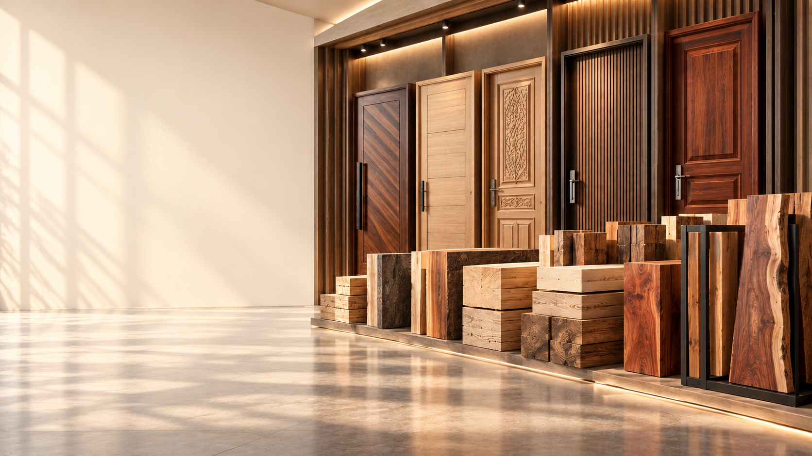

Timber Selection
We source only mature, dense logs of genuine Sagwan (Teak), European Ash wood, and Royal Mahogany with zero sapwood defects.
Four decades of uncompromising dedication to timber quality, bespoke door engineering, and customer trust across Lahore.
HSA & SONS was founded in 1984 in the historic timber market of Ravi Road, Lahore. What began as a wholesale raw timber yard has grown over 40+ years into one of Lahore's most respected full-service timber supply, chokhat milling, and solid wood door manufacturing firms.
Our founder believed in one simple rule: "Quality timber is the foundation of lasting architecture. If the wood is seasoned right, it will outlast generations." That principle remains at the heart of our work today as our team combines generational carpentry wisdom with modern precision woodworking.
Today, with 3 branches operating across Lahore, we cater to individual homeowners, premier architects, luxury housing societies (DHA, Bahria Town, Gulberg, Model Town), and construction contractors.

The biggest complaint in Pakistan with wooden doors and timber is warping, cracking, or swelling during rainy seasons. Here is how our four-step process eliminates these issues.
We source only mature, dense logs of genuine Sagwan (Teak), European Ash wood, and Royal Mahogany with zero sapwood defects.
Timber is dried in controlled kilns down to an optimal 10% - 12% moisture level, ensuring lifetime resistance against weather warping.
Hand-carved panels or high-accuracy computerized CNC routing ensure seamless mortise-and-tenon joints and structural stability.
Every door receives grain filler, primer, sanding, and premium polyurethane lacquer polish to preserve natural luster for decades.
Experience our door finishes in person, examine solid wood cross-sections, and consult with our timber masters at any of our three locations.
| Branch Name | Branch Type & Services | Address in Lahore | Contact Phone | Operational Timings | Status |
|---|---|---|---|---|---|
| Branch 1 (Head Workshop & Sawmill) | Raw Timber Seasoning, Sawmill, Timber Wholesale & Custom Carpentry | Plot 42, Main Timber Market, Ravi Road, Lahore | +92 300 4567890 | 8:30 AM - 7:00 PM | Open Daily |
| Branch 2 (Showroom & Display) | Door Display Showroom, Plywood & Polish Samples, Chokhats | Main Ferozepur Road (Near Chungi Amar Sidhu), Lahore | +92 321 8976543 | 10:00 AM - 9:00 PM | Open Daily |
| Branch 3 (Retail & Design Desk) | Architectural Consultation, Fiber & PVC Collections, Hardware | Shop 18, Commercial Block, Main Market Gulberg II, Lahore | +92 333 1122334 | 11:00 AM - 9:30 PM | Open Daily |
Need directions or want to confirm stock before visiting? Contact our central desk →
We stock, season, and fabricate from a complete range of genuine imported and domestic timber species.
The gold standard of timber. Naturally rich in silica and natural oils, making it impervious to moisture, decay, and termites for over 50 years.
Known for distinct, prominent straight grain patterns and incredible shock resistance. Extremely popular for modern stain finishes and light tones.
Deep reddish-brown hue that darkens gorgeously over time. Unbeatable dimensional stability with a silky smooth finish when polished.
Pakistan's national tree timber, famous for its sweet natural aroma, natural insect repellence, and heritage suitability in historic bungalows.
Uniform density core sheets with moisture-resistant phenolic glue. Ideal for bedroom flush doors and high-traffic office doors.
Engineered synthetic composite polymers designed for zero water absorption, suitable for bathroom doors exposed to hot steam and showers.
Talk directly with our wood specialists for timber advice, door estimates, and site measurement visits in Lahore.
Book a Showroom Visit